¿Que es Keycloak?
Keycloak es un producto de software de código abierto que permite el inicio de sesión único con gestión de identidades y accesos, diseñado para aplicaciones y servicios modernos.
Patron BFF
El patrón BFF hace referencia al concepto de Backend For FrontEnd. Cuando nosotros diseñamos muchas de nuestras aplicaciones nos encontramos en situaciones en las que tenemos diseñado un FrontEnd realizado en JavaScript contra un Backend desarrollado en la tecnología que nos plazca pero muchas veces enfocado a Servicios REST . En muchos casos el BackEnd esta diseñado de una forma neutra es decir publica una información de la que cualquier cliente puede beneficiarse . Eso sí cada cliente dispondrá de un interface de usuario diferente a otros . Al publicar la información de forma muy neutra todos los clientes se adaptarán a ella , pero cada uno de los cuales necesitará realizar un esfuerzo diferente para cargar los datos necesarios que presenta. Fuente: ArquiteturaJava
¿Por que BFF con Keycloak?
Usando un patron BFF en nuestro Backend tenemos las siguientes ventajas
1 - Separacion de preocupaciones
- El frontend se centra en la UI, y no necesita preocuparse por autenticación compleja ni detalles de autorización.
- El BFF se encarga de la autenticación con Keycloak, gestión de tokens, transformación de datos, y llamadas a APIs internas.
2 - Seguridad y control de acceso
- El BFF maneja la validación del JWT, verifica roles/permisos y controla qué rutas están permitidas.
- El frontend nunca toca directamente Keycloak ni otros microservicios.
3 - Mejor manejo de tokens
- El BFF puede usar tokens más seguros (HttpOnly cookies) y mantener tokens de refresco lejos del frontend.
- También puede actuar como proxy para renovar tokens automáticamente.
4 - Customizacion por cliente
- Una app móvil puede tener distintos requerimientos de datos que una app web.
- Con BFF, cada frontend tiene su propio backend adaptado a sus necesidades (datos resumidos, transformados, cacheados, etc.).
5 - Facilita cambios sin afectar todo
- Cambios en un BFF solo afectan a su cliente.
- Es más fácil de probar, desplegar y mantener.
Instalacion de una instancia de Keycloak
Para esta practica, usaremos una instancia de desarrollo de Keycloak, para esto, utilizaremos docker con la imagen oficial de Keycloak. Para esto, usaremos el siguiente comando:
docker run -p 3030:8080 -e KC_BOOTSTRAP_ADMIN_USERNAME=admin -e KC_BOOTSTRAP_ADMIN_PASSWORD=admin quay.io/keycloak/keycloak:26.2.5 start-dev
Acceso a la terminal administrativa
La primera vez que realicemos este proceso, puede que tarde un poco, ya que se tendra que descargar la imagen a utilizar. Una vez que la imagen haya sido descargada y que la instancia este corriendo, accederemos a la siguiente ruta
En la que debera verse la siguiente pantalla

Una vez en esta pantalla, necesitamos las credenciales que hemos determinado en el comando de la creacion de instancia
KC_BOOTSTRAP_ADMIN_USERNAME=admin -e KC_BOOTSTRAP_ADMIN_PASSWORD=admin
En estos parametros es donde se definen las crecenciales de nuestro usuario temporal. Por tanto, nuestras credenciales seran:
Username or email
admin
Password
admin
Si hemos ingresado los datos correctamente, deberiamos acceder a la siguiente pantalla

Pasos escenciales
Una vez que hayamos entrado en la pantalla administrativa de nuestra instancia, necesitaremos hacer numero cosas escenciales, las cuales son:
- Definir un usuario no temporal
- Crear un realm
- Crear un client
- Definir roles
Si vemos la pantalla inicia de nuestra pantalla de inicio, veremos la siguiente advertencia
Para resolver esta advertencia, deberemos seguir los siguientes pasos:
Acceder a la seccion users
En nuestra barra lateral izquierda, encontraremos una lista de funciones o carateristicas a las que podemos acceder, en este caso, haremos clic en la opcion "Users"
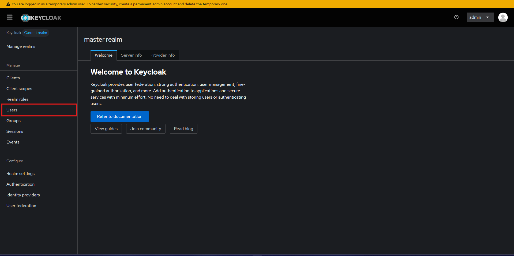
La cual nos mostrara la siguiente seccion
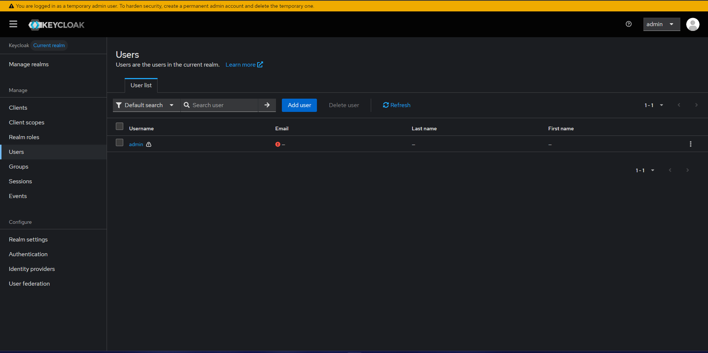
En la cual estara registrado solo nuestro usuario temporal llamado admin. Haremos clic en el boton azul que dice Add User, el cual nos llevara el siguiente formulario
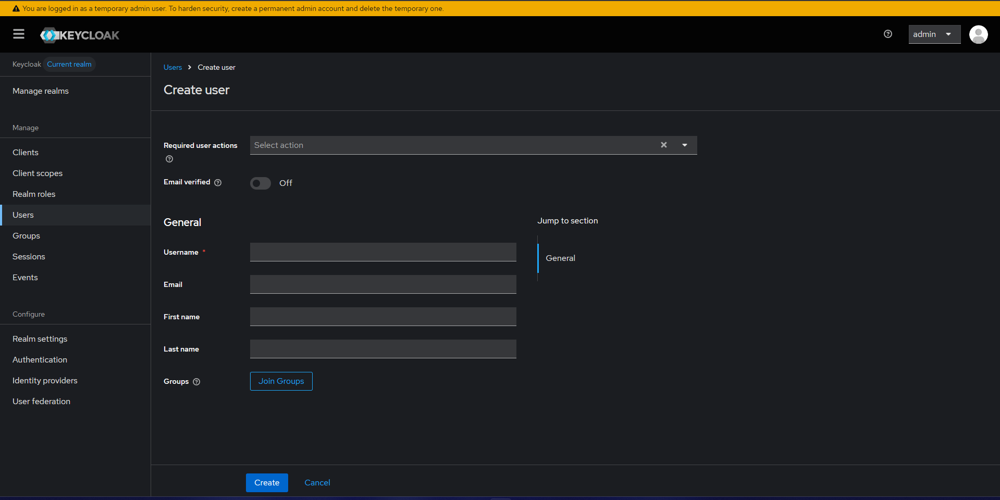
El cual deberemos llenar con los datos que creamos convenientes.
Presionamos el boton Create y nos llevara a la siguiente etapa
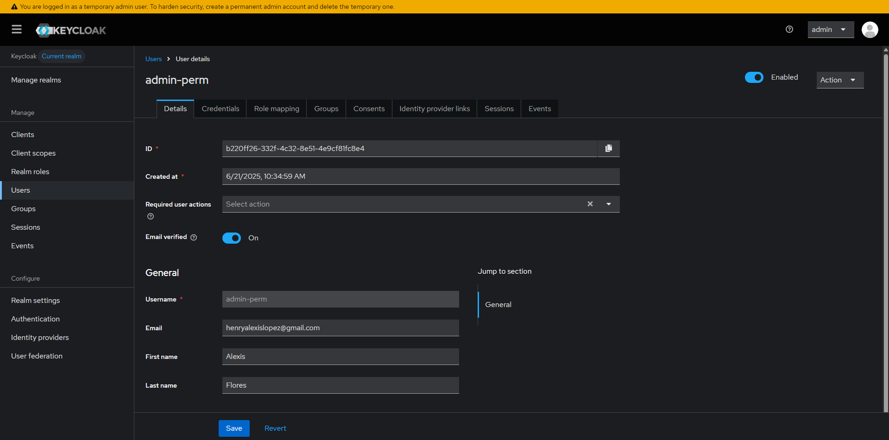
Aca nos interesan dos cosas
- Credentiales
- Role Mapping
Definir credenciales
Primero nos dirigiremos a Credentials, en donde tendremos que definir la manera en la que nuestro usuario accedera a la seccion administrativa.
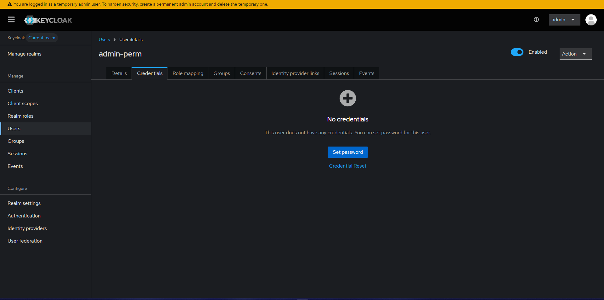
Presionaremos el boton Set Password y llenaremos los campos necesarios.
Presionamos Save y luego Save Password y nuestra contrasena habra sido establecida.
Definir roles
Una vez definidas nuestras credenciales, ahora necesitamos definir que el usuario sera el administrador de toda la instancia. Para esto, primero debemos asegurarnos que nos encontramos en el realm Master. Para ello, en la barra lateral izquierda, encontraremos la opcion llamada Manage realms
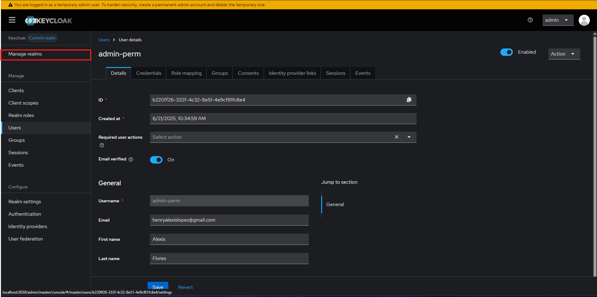
Damos clic, y nos aseguramos de que el Realm con el nombre "mastes" se encuentre con la etiqueta Current realm, de la siguiente forma
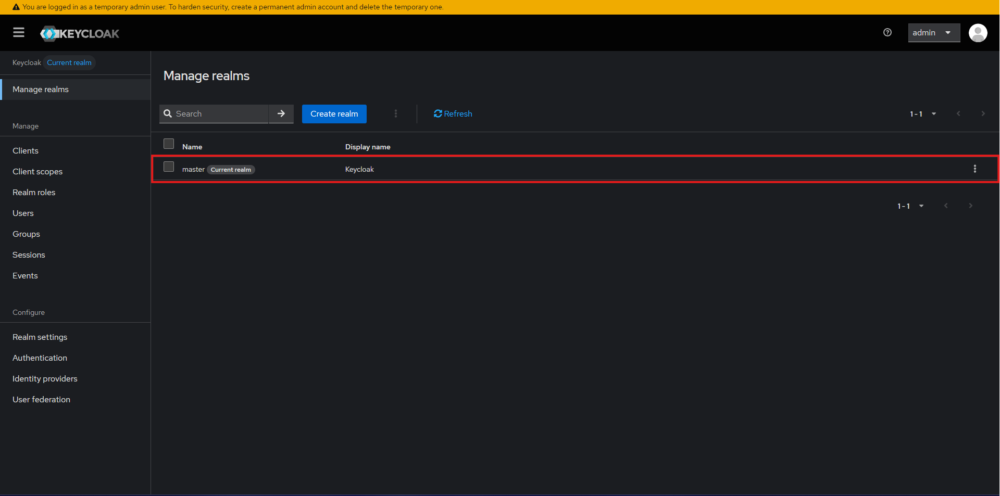
Volvemos a nuestra seccion de usuarios, damos clic en el nombre del usuario que habiamos creados en anterioridad y no dirigiremos al apartado de Role Mapping
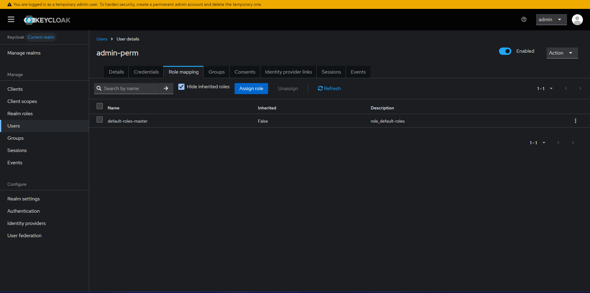
Daremos clic en el boton Assign role, la cual desplegara el siguiente menu:
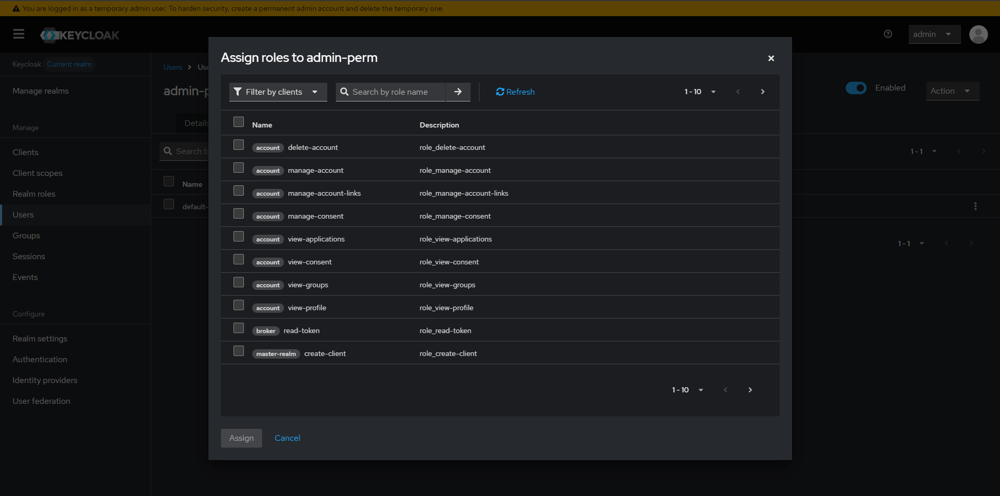
En la parte superior izquierda, encontraremos un icono para filtrar, el cual dice "Filter by clients" daremos clic sobre el y seleccionaremos "Filter by realm roles". Los roles mostrados en pantalla se actualizaran, mostrandonos los siguientes:
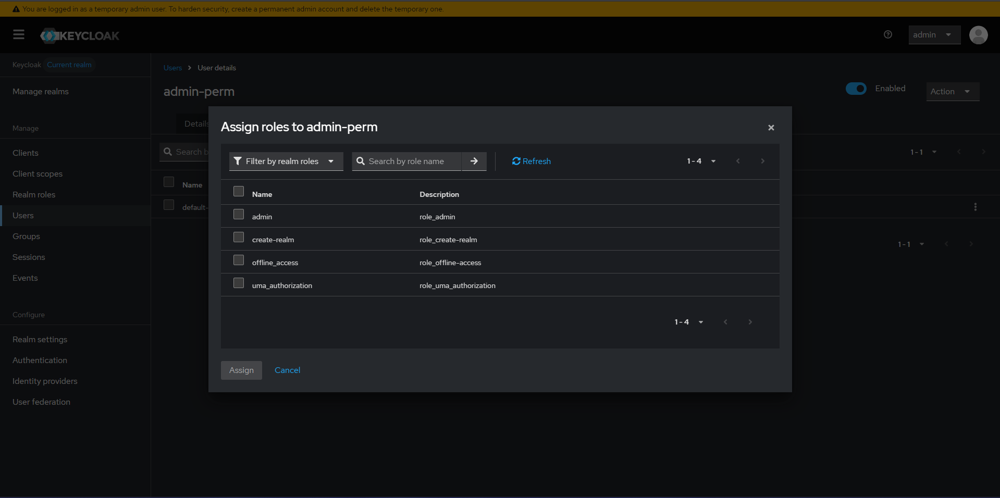
Marcaremos con un cheque el rol que dice "admin" y daremos clic en Assign.
Una vez asignado, los roles de nuestro usuario deberia verse asi:
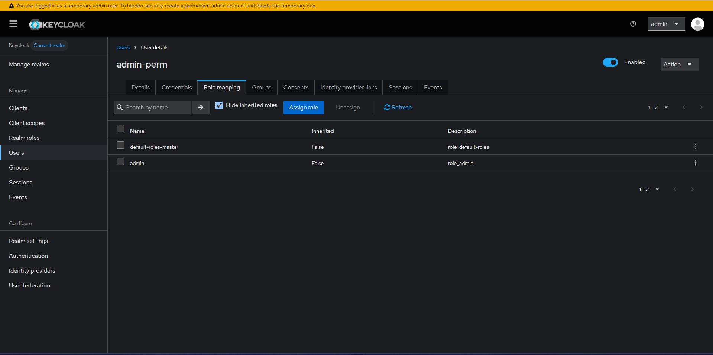
¿Que es un realm?
Un realm en Keycloak (y en general en contextos de seguridad y autenticación) es una unidad de aislamiento que agrupa usuarios, roles, clientes y configuraciones de seguridad de manera completamente independiente de otros realms.
Es decir, podemos tener multiples realm para distintos sistemas, en donde cada uno de sus usuarios, roles, configuraciones, clientes, etc, son distintos.
Creando un realm
Despues de haber creado nuestro usuarios, habernos logeado y borrado el usuario temporal. Necesitamos crear un entorno en donde se estaran almacenando nuestros usuarios, para ello, iremos al apartado de Manage Realms (como lo habiamos hecho con anterioridad)
Y presionaremos el boton Create realm, el cual nos desplegara el siguiente formulario
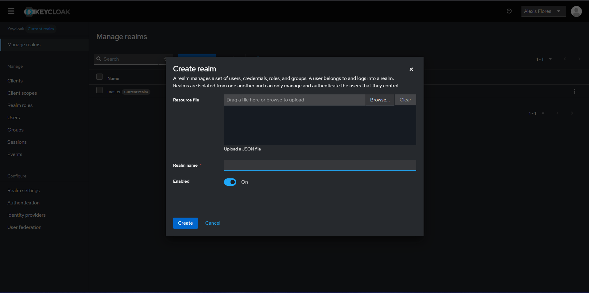
En el cual, solo sera necesario llenar el campo de Realm name
¿Que es un client?
En el contexto de Keycloak, un Client (cliente) es una aplicación que quiere autenticarse usando Keycloak. Puede ser una app web, un frontend, un backend, una app móvil, una API... cualquier cosa que requiera autenticación/autorización gestionada por Keycloak.
Por que es importante?
Como su concepto lo dice, son aplicaciones que estaran permitidas a autenticarse y a hacer uso de nuestras instancias de keycloak. Ejemplo: Si queremos crear un usuario, las peticiones deben venir desde una fuente confiable que este autorizada por nuestra instancia.
Creando un client
Para crear un Client, debemos dirigirnos a la seccion de Clients en nuestra pantalla de administracion de Keycloak
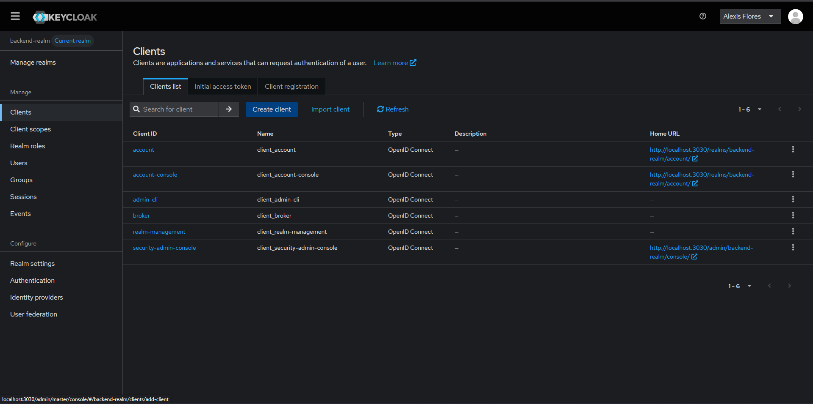
Datos generales
Una vez en la seccion, presionaremos el boton de Create client, el cual nos dirigira al siguiente formulario:
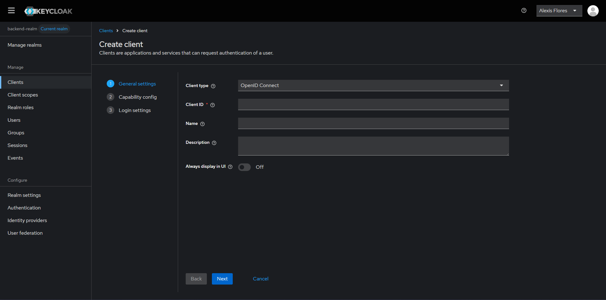
El cual, para este ejemplo llenaremos de la siguiente manera:
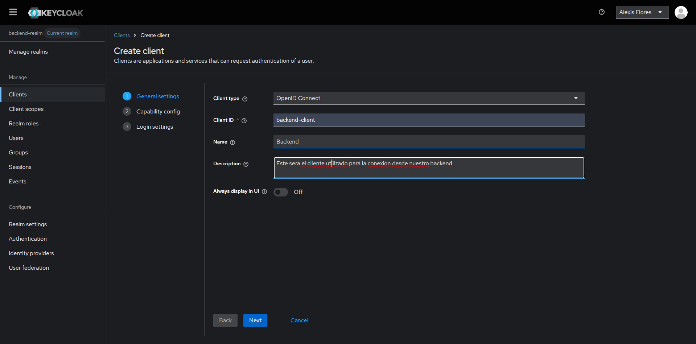
Metodos de autenticacion
Al haber llenado los campos y presionar el boton Next, nos dirigira al formulario de metodos de autenticacion. En el cual, para nuestro caso, configuraremos de la siguiente manera:
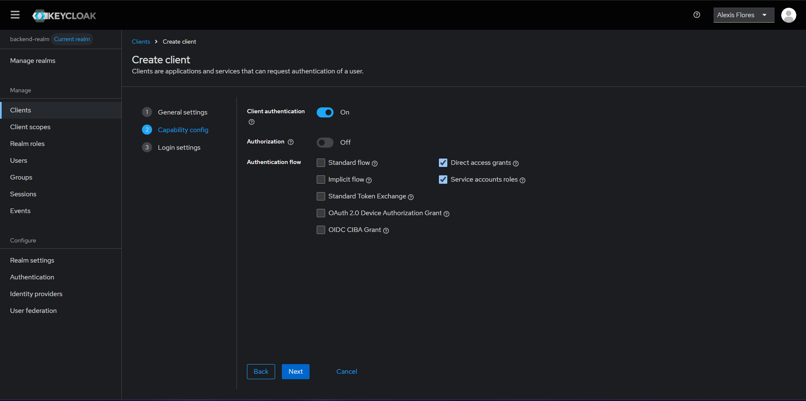
Damos al boton Next, acto seguido, damos en el boton de Save
Realm roles vs Client Roles
Ahora que ya hemos creado nuestro client y nuestro realm, hay que definir que roles existiran dentro de nuestro ecosistema. Y es aquin en donde entra la pregunta ¿En donde los creo?. Ya que si nos dirigimos a la barra lateral izquierda, podemos ver la seccion llamada "Real Roles". Pero si nos vamos a la seccion de clientes y seleccionamos el que creamos con anterioridad, veremos que tambien hay un apartado de roles.
¿Cual es la mejor opcion?
Pues en realidad, depende de de la orientacion que le queremos dar
- Realm roles Se utiliza cuando queremos que nuestros roles tengan un alcance global en nuestro realm, es decir, independientemente el cliente que se conecte a nuestro realm, los roles seran los mismos
- Client roles Se utiliza cuando se quieren que los roles solo sean creados para un cliente en especifico.
En esta ocasion, ya que estamos haciendo un patron BFF y el unico que podra acceder a nuestro Keycloak, es nuestra API a traves de su cliente, optaremos por crear roles en nuestro cliente.
Para ello, nos dirigimos a la seccion de Clients hacemos clic en el que hemos creado, vamos al apartado de Roles, damos clic en Create role y creamos uno. Ejemplo:
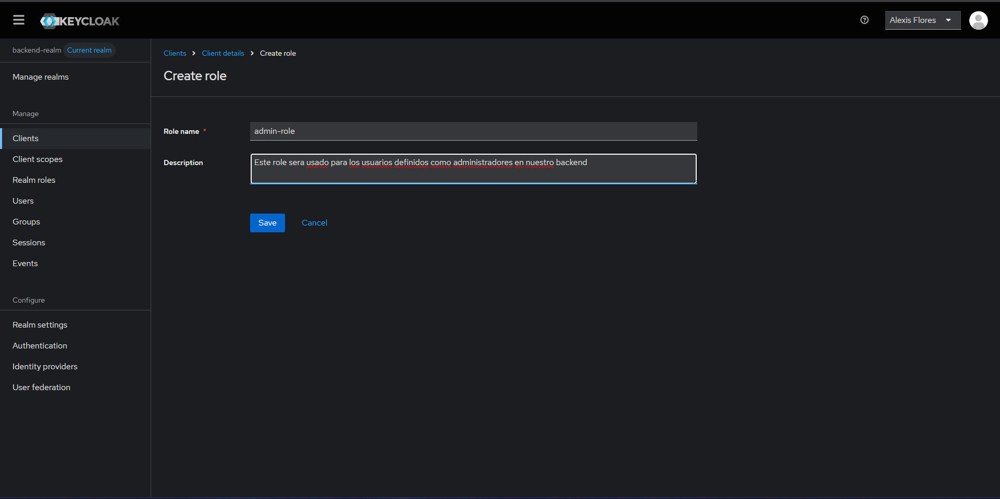
Nuestro cliente y sus roles
Hemos visto como crear roles para los usuarios que estara registrandose en nuestra API, pero aun no sabemos que permisos tiene nuestro cliente, ya que, si este estara conectandose mediante algun metodo con Keycloak, tambien necesito algun metodo de autenticacion y por ende, sus propios roles. Su metodo de autenticacion ya ha sido definido cuando lo creamos, mediante un Client secret. Pero sus roles propios no han sido definidos en ningun momento.
Para ello, en la pantalla de nuestro Client, nos dirigiremos al apartado de Service Accounts Roles, la cual nos mostrara la pantalla siguiente:
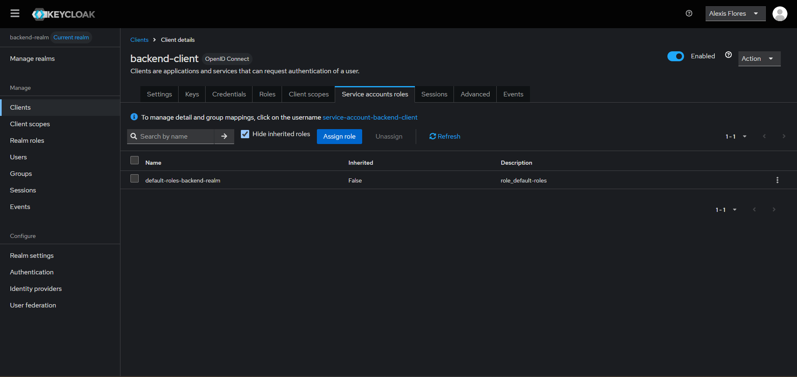
Daremos clic en Assign Role y en la barra de busqueda escribiremos algunas frases y habilitaremos los siguitenes roles
- Buscar: realm
- Habilitar: manage-users
- Buscar: view
- Habilitar: view-users
- Buscar: token
- Habilitar: read-token
Y los roles de nuestro cliente deberian quedar de la siguiente forma:
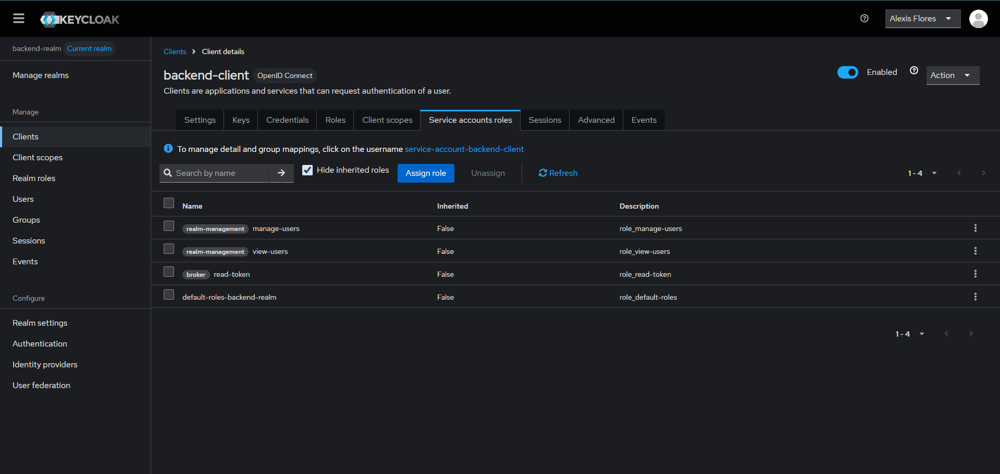
Nuevas dependencias
Ya hemos configurado correctamente nuestro Keycloak para que podamos hacer peticiones desde nuestro backend. Pero nuestro backend aun no esta implementado. Para esto, necesitaremos inicializar un nuevo proyecto con algunas dependencias nuevas y unas nuevas configuraciones. Primero, iniciaremos un proyecto con las mismas caracteristicas que hemos usado con anterioridad
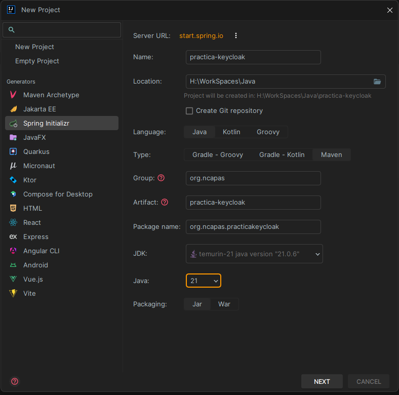
Para nuestras dependencias, ahora tendremos unas cuantas nuevas, entre las cuales se encuentran:
- OpenFein
- Spring Security
- OAuth2 Resource Server
Quedando nuestra seccion de dependencias de la siguiente forma:
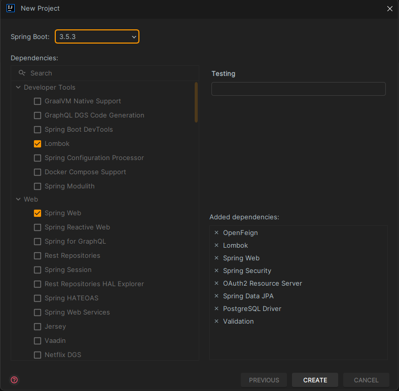
Presionamos Create y esperamos a que neustro proyecto haga su build